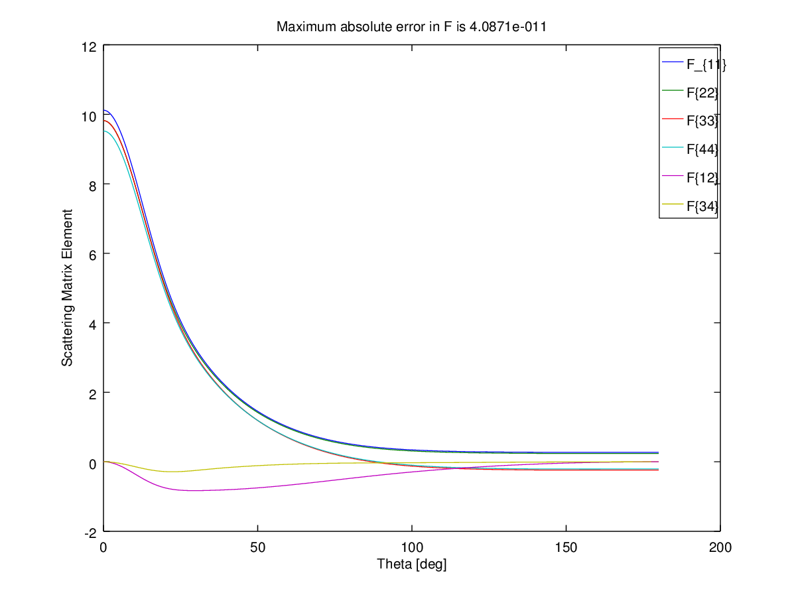

Source code
%% ScriptSolveForT
% Example script showing how to obtain the T-matrix and
% the scattering matrix for random orientation for a spheroid
% at a single wavelength. Prints the cross-sections with accuracy estimates,
% saves the T-matrix elements to an external text file, and plots the
% theta-dependent scattering matrix elements.
%%
%% Initialization
%
% Note that you need to run InitPath in the root folder first to add
% required folders to the Matlab path so that functions can be called
% Alternatively, uncomment the following line
%
% run('..\InitPath');
%
% The following parameters should be defined:
%%
% * a: semi-axis along x,y
% * c: semi-axis along z
% * k1: wavevector in embedding medium (of refractive index nM) (k1=2*pi*nM/lambda)
% * s: relative refractive index (s=n_Particle / nM)
% * N: number of multipoles for T-matrix
% * nNbTheta: number of thetas for quadratures
clear
close all
%% Parameters of the scattering problem
% We define aspect ratio, wavenumber, and size parameter for a
% prolate spheroid
%
% <<../fig/schematicp.png>>
%
h = 10; % aspect ratio, h=c/a for prolate spheroids
s = 1.5+0.02i; % relative refractive index
k1 = 1; % incident wavenumber k1=2pi/lambda * nM
xmax = 10; % maximum size parameter xmax= k1 * max(a,c)
% ... from which we deduce
c = xmax / k1;
a = c / h;
%% Convergence parameters
% Maximum multipole order for T-matrix and series expansions of fields
N = 30;
% Number of points for Gaussian quadratures to compute integrals in P and Q matrices
nNbTheta = 120;
%% Collect simulation parameters in a structure
stParams.a=a; stParams.c=c;
stParams.k1=k1; stParams.s=s;
stParams.N=N; stParams.nNbTheta=nNbTheta;
% Optional parameters may also be defined as follows:
stOptions.bGetR = false;
stOptions.Delta = 0;
stOptions.NB = 0; % NB will be estimated automatically
stOptions.bGetSymmetricT = false;
%% Solving for the T-matrix
tic;
% For the Scattering matrix, we need to keep the entire T-matrix
[stCoa, CstTRa] = slvForT(stParams, stOptions);
fprintf('\nT-matrix (N = %d) ... done in %.f seconds.\n', N, toc);
% To test for convergence and accuracy for a given set of parameters, one
% can for example repeat the calculation with N=N+5 and nNbTheta=nNbTheta+5
% as illustrated below
fprintf('Convergence testing...\n');
tic;
stParams2=stParams;
stParams2.N=stParams2.N+5;
stParams2.nNbTheta=stParams2.nNbTheta+5;
[stCoa2, CstTRa2] = slvForT(stParams2,stOptions);
fprintf('\nT-matrix (N = %d) ... done in %.f seconds.\n', N, toc);
%% Reshape the T-matrix to long format, and export to text file
T = exportTmatrix(CstTRa, 'Tmatrix.txt');
%% Display orientation-averaged results
fprintf('Results for a=%g, c=%g, k1=%g, s=%g+%gi, N=%d, Nt=%d\n',...
a, c, k1, real(s),imag(s), N, nNbTheta);
fprintf('\nCross sections for orientation-averaged excitation (and estimated accuracy):\n');
fprintf(' = %.20g, relative error: %.2g\n', stCoa.Cext, ...
abs(stCoa.Cext./stCoa2.Cext-1));
fprintf(' = %.20g, relative error: %.2g\n', stCoa.Csca, ...
abs(stCoa.Csca./stCoa2.Csca-1));
fprintf(' = %.20g, relative error: %.2g\n', stCoa.Cabs, ...
abs(stCoa.Cabs./stCoa2.Cabs-1));
%% Calculate the scattering matrix, test its accuracy, and plot the results
lambda=2*pi/k1; % We need lambda here, so assume embedding medium is air
nNbThetaSM=360;
tic
stSM = pstScatteringMatrixOA(CstTRa,lambda,stCoa.Csca,nNbThetaSM);
fprintf('Scattering Matrix (N = %d) ... done in %.f seconds.\n', N, toc);
tic
stSM2 = pstScatteringMatrixOA(CstTRa2,lambda,stCoa2.Csca,nNbThetaSM);
fprintf('Scattering Matrix (N = %d) ... done in %.f seconds.\n', N+5, toc);
% errors in expansion coefficients alpha and beta
errRelAB = abs(stSM.AllAB./stSM2.AllAB(1:(2*N+1),:)-1);
errAbsAB = abs(stSM.AllAB-stSM2.AllAB(1:(2*N+1),:));
% errors in angle-dependent scattering matrix elements
errRelF = abs(stSM.AllF./stSM2.AllF-1);
errAbsF = abs(stSM.AllF-stSM2.AllF);
figure('Name','Scattering matrix')
plot(stSM.thetadeg,stSM.AllF(:,2:7));
xlabel('Theta [deg]')
ylabel('Scattering Matrix Element')
legend({'F_{11}','F{22}','F{33}','F{44}','F{12}','F{34}'})
title(['Maximum absolute error in F is ', num2str(max(max(errAbsF)))]);
Execution results
octave>ScriptSolveForT
sphCalculatePQ: Calculating P,Q for 31 m-values with N_Q = 30, N_B = 30, N_Theta = 120
T-matrix (N = 30) ... done in 1 seconds.
Convergence testing...
sphCalculatePQ: Calculating P,Q for 36 m-values with N_Q = 35, N_B = 35, N_Theta = 125
T-matrix (N = 30) ... done in 1 seconds.
Results for a=1, c=10, k1=1, s=1.5+0.02i, N=30, Nt=120
Cross sections for orientation-averaged excitation (and estimated accuracy):
= 18.737732166323013416, relative error: 7e-013
= 16.601204532910415423, relative error: 2.8e-013
= 2.1365276334125979929, relative error: 8.3e-012
Scattering Matrix (N = 30) ... done in 317 seconds.
Scattering Matrix (N = 35) ... done in 552 seconds.
Generated graphics
